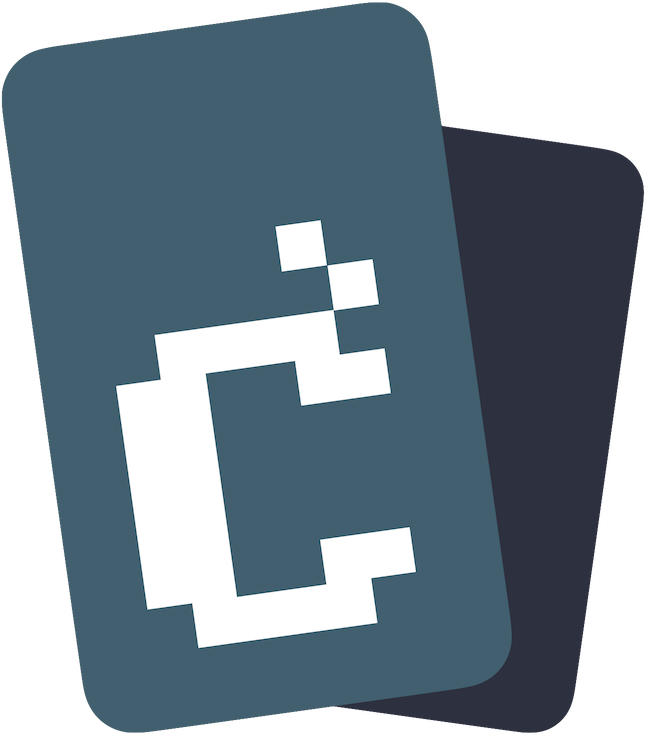

Community localization
Welcome to capes.localize
Translate the capes.me website, apps and docs then keep everything in sync.
Continue to Discord. Your server role determines your localization access.
Roles control what you can do

capeslocalizeCommunity localization
Translate the capes.me website, apps and docs then keep everything in sync.
Continue to Discord. Your server role determines your localization access.